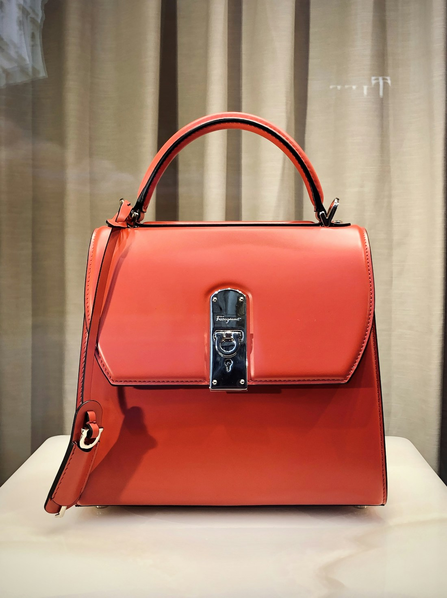
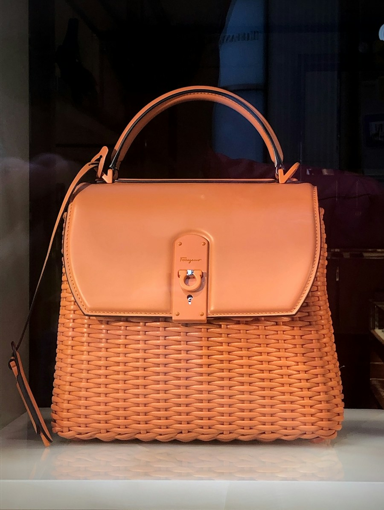

01 / Select
We choose the character.
Each hide is checked by hand for its grain, strength and natural marks. No two pieces begin quite the same.
Small-batch leather goods with a life of their own. Cut, stitched and finished by hand — then marked with the initials that make it yours.

Useful companions, cut from honest leather and finished with the details that matter.

Choose the piece, pick a thread and add up to three letters. Our makers press your monogram by hand, just for you.
Atelier Hide began with a simple idea: the things we reach for every day should feel good in the hand, get better with use, and be made with care. We work in small batches, leave room for the leather's own character, and take the long way around when it makes a better object.
“The best things we own aren't perfect. They're the ones that have been with us the longest.”A note from the workshop
A little patience at every step makes a piece that feels right from the first carry.
Each hide is checked by hand for its grain, strength and natural marks. No two pieces begin quite the same.
Patterns are cut in small runs. Edges are burnished smooth, seams are stitched, and hardware is set one piece at a time.
Choose initials or leave it plain. Either way, every piece is checked, wrapped and ready for the years ahead.